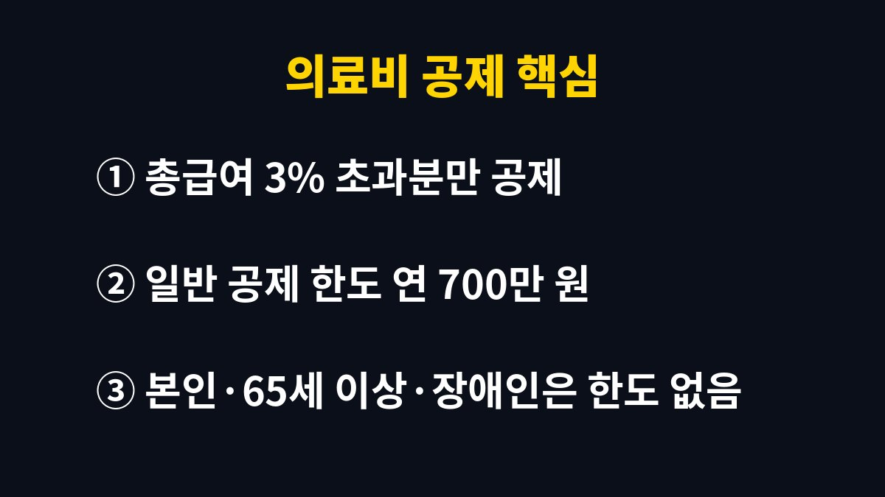
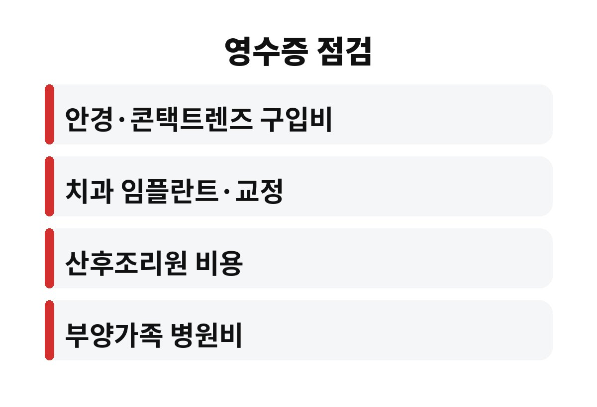

의료비 공제는 올해 쓴 병원비가 총급여의 3%를 넘는 부분에만 적용되고, 3%에 못 미치면 공제액은 0원이다. 병원비를 꽤 썼다고 생각하는 직장인이라면 내 영수증이 그 기준을 넘는지 아직 계산해 보지 않았을 텐데, 넘기려면 얼마를 더 챙겨야 할까?
의료비 공제는 쓴 돈 전부를 돌려주는 제도가 아니다. 총급여의 3%까지는 누구나 쓰는 생활비로 보고, 그 문턱을 넘은 금액만 공제 대상으로 잡는다. 예를 들어 총급여가 4천만 원이면 문턱은 120만 원이다. 병원비를 100만 원 썼다면 공제받을 금액은 없다는 뜻이다.
그래서 의료비 공제는 병원비를 많이 쓴 해에 유리하고, 건강했던 해에는 효과가 거의 없다. 문턱을 넘지 못했다고 실망할 필요는 없다. 아래에서 설명하는 방법으로 합산 대상을 넓히면 문턱을 넘을 수 있다.
총급여 3%를 넘긴 금액은 연 700만 원까지 공제 대상이 된다. 다만 본인, 만 65세 이상 부모님, 장애인 가족을 위해 쓴 의료비는 한도 없이 전액을 대상으로 본다. 부모님 병원비를 대신 냈다면 이 부분이 크게 작용한다.
공제 대상이 된 금액에는 15%의 세액공제율이 적용된다. 문턱을 넘긴 금액이 200만 원이라면 세금에서 30만 원이 빠지는 구조다. 소득공제가 아니라 세액공제라서 내 세금에서 바로 차감된다는 점이 체감이 큰 이유다.

의외로 놓치는 항목이 많다. 시력 교정용 안경과 콘택트렌즈 구입비는 일정 한도 안에서 인정되고, 치과 임플란트와 교정 치료비도 대상에 들어간다. 산후조리원 비용도 한도 안에서 공제가 가능하다. 반면 미용 목적의 성형 수술과 건강기능식품 구입비는 공제 대상이 아니다.
약국에서 산 약값도 처방 여부와 관계없이 치료 목적이면 대상이 될 수 있다. 다만 영수증이 있어야 하므로 카드 내역만 믿지 말고 연말정산 간소화 서비스에서 빠진 항목이 없는지 직접 확인하는 것이 좋다.
의료비는 기본공제 대상인 부양가족이 쓴 금액도 합칠 수 있다. 소득이 높은 배우자와 낮은 배우자 중 누구에게 몰아주느냐에 따라 결과가 달라진다. 문턱이 되는 3%는 총급여에 따라 정해지므로, 총급여가 낮은 쪽으로 몰아주면 문턱이 낮아져 공제받을 금액이 늘어나는 경우가 많다.
반대로 총급여가 높은 사람에게 몰아주면 문턱이 높아 한 푼도 못 받을 수 있다. 가족의 연간 병원비를 한 번에 정리해서 한 사람에게 모으는 방법을 검토해 볼 만하다. 단, 부양가족의 소득 요건에 따라 합산 가능 여부가 달라지므로 본인 상황에 맞게 확인해야 한다.
연말이 가까워진 지금이 병원비를 점검하기에 가장 좋은 시기다. 미루던 치과 치료나 안경 교체가 있다면 올해 안에 결제해야 올해 공제에 포함된다. 문턱을 이미 넘겼다면 추가로 쓰는 돈은 바로 공제 대상이 되고, 아직 못 넘겼다면 올해는 포기하는 것도 현명한 선택이다.
정리하면 총급여의 3% 계산, 부양가족 몰아주기, 놓치기 쉬운 항목 확인이라는 세 가지만 챙기면 된다. 올해 병원비 영수증은 문턱을 넘을 것 같은지 한번 계산해 보면 좋겠다. 도움이 되었다면 구독으로 다음 글도 확인해 보기를 바란다.
한 가지 더 기억할 점이 있다. 실손보험으로 돌려받은 보험금은 의료비에서 빼고 계산해야 한다. 병원에 100만 원을 내고 보험금으로 60만 원을 받았다면 공제 대상 의료비는 40만 원이다. 이 부분을 놓치고 전액을 신고하면 나중에 추가로 세금을 내야 할 수 있어서 주의가 필요하다.
또 하나는 현금으로 낸 병원비다. 현금 영수증이나 진료비 영수증이 없으면 간소화 자료에 잡히지 않을 수 있다. 동네 의원이나 한의원에서 현금으로 결제한 내역이 있다면 영수증을 따로 모아 두었다가 제출 서류에 직접 추가하는 것이 좋다. 이런 작은 영수증이 모여 3%의 문턱을 넘겨주는 경우가 생각보다 많다.
마지막으로 맞벌이 부부라면 각자의 총급여 3%를 미리 계산해 두는 습관이 필요하다. 연말에 서둘러 몰아주기를 정하면 실수하기 쉽다. 11월 안에 병원비 합계와 문턱 금액을 엑셀이나 메모장에 적어 보면 어느 쪽이 유리한지 금방 보인다. 올해 연말정산에서 한 푼이라도 더 돌려받고 싶다면 오늘 바로 영수증부터 모아 보자.

본 글은 일반적인 정보 제공을 위한 것이며 투자 권유가 아니다. 세법과 개인 상황에 따라 결과가 다를 수 있다.